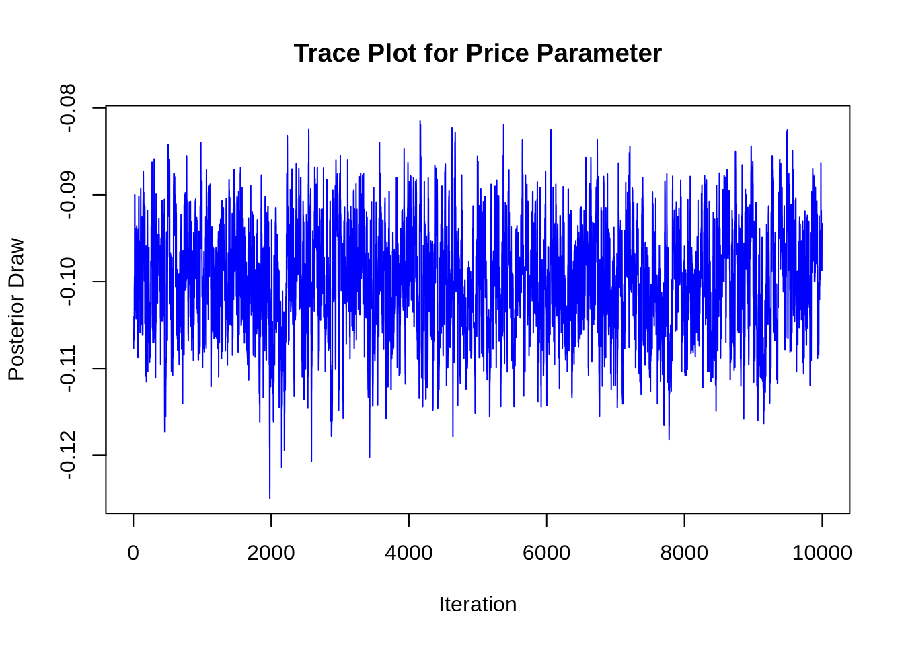
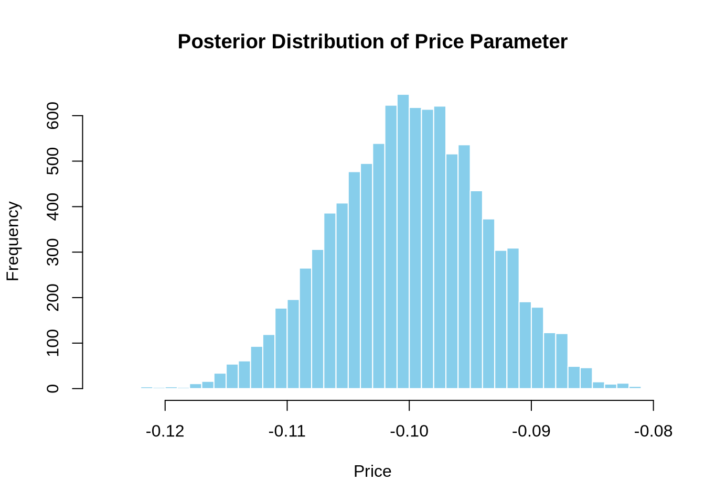

# set seed for reproducibility
set.seed(123)
# define attributes
brand <- c("N", "P", "H") # Netflix, Prime, Hulu
ad <- c("Yes", "No")
price <- seq(8, 32, by=4)
# generate all possible profiles
profiles <- expand.grid(
brand = brand,
ad = ad,
price = price
)
m <- nrow(profiles)
# assign part-worth utilities (true parameters)
b_util <- c(N = 1.0, P = 0.5, H = 0)
a_util <- c(Yes = -0.8, No = 0.0)
p_util <- function(p) -0.1 * p
# number of respondents, choice tasks, and alternatives per task
n_peeps <- 100
n_tasks <- 10
n_alts <- 3
# function to simulate one respondent’s data
sim_one <- function(id) {
datlist <- list()
# loop over choice tasks
for (t in 1:n_tasks) {
# randomly sample 3 alts (better practice would be to use a design)
dat <- cbind(resp=id, task=t, profiles[sample(m, size=n_alts), ])
# compute deterministic portion of utility
dat$v <- b_util[dat$brand] + a_util[dat$ad] + p_util(dat$price) |> round(10)
# add Gumbel noise (Type I extreme value)
dat$e <- -log(-log(runif(n_alts)))
dat$u <- dat$v + dat$e
# identify chosen alternative
dat$choice <- as.integer(dat$u == max(dat$u))
# store task
datlist[[t]] <- dat
}
# combine all tasks for one respondent
do.call(rbind, datlist)
}
# simulate data for all respondents
conjoint_data <- do.call(rbind, lapply(1:n_peeps, sim_one))
# remove values unobservable to the researcher
conjoint_data <- conjoint_data[ , c("resp", "task", "brand", "ad", "price", "choice")]
# clean up
rm(list=setdiff(ls(), "conjoint_data"))Multinomial Logit Model
This assignment expores two methods for estimating the MNL model: (1) via Maximum Likelihood, and (2) via a Bayesian approach using a Metropolis-Hastings MCMC algorithm.
1. Likelihood for the Multi-nomial Logit (MNL) Model
Suppose we have \(i=1,\ldots,n\) consumers who each select exactly one product \(j\) from a set of \(J\) products. The outcome variable is the identity of the product chosen \(y_i \in \{1, \ldots, J\}\) or equivalently a vector of \(J-1\) zeros and \(1\) one, where the \(1\) indicates the selected product. For example, if the third product was chosen out of 3 products, then either \(y=3\) or \(y=(0,0,1)\) depending on how we want to represent it. Suppose also that we have a vector of data on each product \(x_j\) (eg, brand, price, etc.).
We model the consumer’s decision as the selection of the product that provides the most utility, and we’ll specify the utility function as a linear function of the product characteristics:
\[ U_{ij} = x_j'\beta + \epsilon_{ij} \]
where \(\epsilon_{ij}\) is an i.i.d. extreme value error term.
The choice of the i.i.d. extreme value error term leads to a closed-form expression for the probability that consumer \(i\) chooses product \(j\):
\[ \mathbb{P}_i(j) = \frac{e^{x_j'\beta}}{\sum_{k=1}^Je^{x_k'\beta}} \]
For example, if there are 3 products, the probability that consumer \(i\) chooses product 3 is:
\[ \mathbb{P}_i(3) = \frac{e^{x_3'\beta}}{e^{x_1'\beta} + e^{x_2'\beta} + e^{x_3'\beta}} \]
A clever way to write the individual likelihood function for consumer \(i\) is the product of the \(J\) probabilities, each raised to the power of an indicator variable (\(\delta_{ij}\)) that indicates the chosen product:
\[ L_i(\beta) = \prod_{j=1}^J \mathbb{P}_i(j)^{\delta_{ij}} = \mathbb{P}_i(1)^{\delta_{i1}} \times \ldots \times \mathbb{P}_i(J)^{\delta_{iJ}}\]
Notice that if the consumer selected product \(j=3\), then \(\delta_{i3}=1\) while \(\delta_{i1}=\delta_{i2}=0\) and the likelihood is:
\[ L_i(\beta) = \mathbb{P}_i(1)^0 \times \mathbb{P}_i(2)^0 \times \mathbb{P}_i(3)^1 = \mathbb{P}_i(3) = \frac{e^{x_3'\beta}}{\sum_{k=1}^3e^{x_k'\beta}} \]
The joint likelihood (across all consumers) is the product of the \(n\) individual likelihoods:
\[ L_n(\beta) = \prod_{i=1}^n L_i(\beta) = \prod_{i=1}^n \prod_{j=1}^J \mathbb{P}_i(j)^{\delta_{ij}} \]
And the joint log-likelihood function is:
\[ \ell_n(\beta) = \sum_{i=1}^n \sum_{j=1}^J \delta_{ij} \log(\mathbb{P}_i(j)) \]
2. Simulate Conjoint Data
We will simulate data from a conjoint experiment about video content streaming services. We elect to simulate 100 respondents, each completing 10 choice tasks, where they choose from three alternatives per task. For simplicity, there is not a “no choice” option; each simulated respondent must select one of the 3 alternatives.
Each alternative is a hypothetical streaming offer consistent of three attributes: (1) brand is either Netflix, Amazon Prime, or Hulu; (2) ads can either be part of the experience, or it can be ad-free, and (3) price per month ranges from $4 to $32 in increments of $4.
The part-worths (ie, preference weights or beta parameters) for the attribute levels will be 1.0 for Netflix, 0.5 for Amazon Prime (with 0 for Hulu as the reference brand); -0.8 for included adverstisements (0 for ad-free); and -0.1*price so that utility to consumer \(i\) for hypothethical streaming service \(j\) is
\[ u_{ij} = (1 \times Netflix_j) + (0.5 \times Prime_j) + (-0.8*Ads_j) - 0.1\times Price_j + \varepsilon_{ij} \]
where the variables are binary indicators and \(\varepsilon\) is Type 1 Extreme Value (ie, Gumble) distributed.
The following code provides the simulation of the conjoint data.
Note
3. Preparing the Data for Estimation
The “hard part” of the MNL likelihood function is organizing the data, as we need to keep track of 3 dimensions (consumer \(i\), covariate \(k\), and product \(j\)) instead of the typical 2 dimensions for cross-sectional regression models (consumer \(i\) and covariate \(k\)). The fact that each task for each respondent has the same number of alternatives (3) helps. In addition, we need to convert the categorical variables for brand and ads into binary variables.
3. Preparing the Data for Estimation
In this section, we load and preprocess our conjoint dataset to be compatible with multinomial logit estimation. Each row represents an alternative in a choice task, and we encode categorical variables into binary indicators.
# Load required library
library(dplyr)
Attaching package: 'dplyr'The following objects are masked from 'package:stats':
filter, lagThe following objects are masked from 'package:base':
intersect, setdiff, setequal, union# Load the CSV data
conjoint_data <- read.csv("/home/jovyan/Desktop/quarto_website1/projects/project1/HW3/conjoint_data.csv",
stringsAsFactors = FALSE)
# Convert columns to proper types
conjoint_data <- conjoint_data %>%
mutate(
respondent = as.integer(resp),
task = as.integer(task),
choice = as.integer(choice),
price = as.numeric(price),
brand = factor(brand),
ads = factor(ad)
) %>%
select(respondent, task, choice, brand, ads, price)
# Create design matrix (excluding intercept)
X <- model.matrix(~ brand + ads + price, data = conjoint_data)
# Combine with respondent, task, and choice
data_prepped <- cbind(conjoint_data[, c("respondent", "task", "choice")], X[, -1])
# Preview result
head(data_prepped) respondent task choice brandN brandP adsYes price
1 1 1 1 1 0 1 28
2 1 1 0 0 0 1 16
3 1 1 0 0 1 1 16
4 1 2 0 1 0 1 32
5 1 2 1 0 1 1 16
6 1 2 0 1 0 1 244. Estimation via Maximum Likelihood
## 4. Estimation via Maximum Likelihood
# Load required libraries
library(dplyr)
# Log-likelihood function for MNL model
mnl_loglik <- function(beta, X, y, id_task) {
df <- data.frame(
util = as.vector(X %*% beta),
choice = y,
task = id_task
)
log_likelihood <- df %>%
group_by(task) %>%
summarise(log_prob = {
exp_util <- exp(util)
prob <- exp_util / sum(exp_util)
log(prob[choice == 1])
}) %>%
pull(log_prob) %>%
sum()
return(-log_likelihood) # Return negative log-likelihood for minimization
}
# Prepare inputs
X <- as.matrix(data_prepped[, c("brandN", "brandP", "adsYes", "price")])
y <- data_prepped$choice
id_task <- paste(data_prepped$respondent, data_prepped$task, sep = "_")
start_vals <- rep(0, ncol(X))
# Estimate MLEs using optim
mle_fit <- optim(
par = start_vals,
fn = mnl_loglik,
X = X,
y = y,
id_task = id_task,
method = "BFGS",
hessian = TRUE
)
# Extract estimates and compute standard errors
coef_est <- mle_fit$par
vcov_mat <- solve(mle_fit$hessian)
se_est <- sqrt(diag(vcov_mat))
# Construct 95% confidence intervals
conf_int <- cbind(
Estimate = coef_est,
`Std. Error` = se_est,
`CI Lower` = coef_est - 1.96 * se_est,
`CI Upper` = coef_est + 1.96 * se_est
)
# Round and label
conf_int <- round(conf_int, 4)
rownames(conf_int) <- colnames(X)
# Display result
conf_int Estimate Std. Error CI Lower CI Upper
brandN 0.9412 0.1110 0.7236 1.1588
brandP 0.5016 0.1111 0.2839 0.7194
adsYes -0.7320 0.0878 -0.9041 -0.5599
price -0.0995 0.0063 -0.1119 -0.08715. Estimation via Bayesian Methods
todo: code up a metropolis-hasting MCMC sampler of the posterior distribution. Take 11,000 steps and throw away the first 1,000, retaining the subsequent 10,000.
## 5. Estimation via Bayesian Methods
library(MASS) # for mvrnorm
Attaching package: 'MASS'The following object is masked from 'package:dplyr':
select# Reuse log-likelihood from MLE section (with X, y, id_task)
log_lik <- function(beta) {
df <- data.frame(util = as.vector(X %*% beta), choice = y, task = id_task)
df %>%
group_by(task) %>%
summarise(log_prob = {
exp_util <- exp(util)
prob <- exp_util / sum(exp_util)
log(prob[choice == 1])
}) %>%
pull(log_prob) %>%
sum()
}
# Log-prior: N(0, 5^2) for first 3, N(0, 1^2) for price
log_prior <- function(beta) {
sum(dnorm(beta[1:3], mean = 0, sd = 5, log = TRUE)) +
dnorm(beta[4], mean = 0, sd = 1, log = TRUE)
}
# Log-posterior
log_post <- function(beta) {
log_lik(beta) + log_prior(beta)
}
# Metropolis-Hastings settings
n_iter <- 11000
burn_in <- 1000
n_keep <- n_iter - burn_in
n_params <- ncol(X)
# Starting values and storage
beta_current <- rep(0, n_params)
samples <- matrix(NA, nrow = n_iter, ncol = n_params)
colnames(samples) <- colnames(X)
# Proposal: multivariate normal with diagonal covariance
proposal_sd <- c(0.05, 0.05, 0.05, 0.005)
# Sampling loop
set.seed(42)
for (i in 1:n_iter) {
beta_proposed <- beta_current + rnorm(n_params, mean = 0, sd = proposal_sd)
log_alpha <- log_post(beta_proposed) - log_post(beta_current)
if (log(runif(1)) < log_alpha) {
beta_current <- beta_proposed # accept
}
samples[i, ] <- beta_current
}
# Discard burn-in
posterior_samples <- samples[(burn_in + 1):n_iter, ]
# Summarize results
bayes_summary <- apply(posterior_samples, 2, function(param) {
c(mean = mean(param),
sd = sd(param),
`2.5%` = quantile(param, 0.025),
`97.5%` = quantile(param, 0.975))
})
# Transpose and display
bayes_summary <- round(t(bayes_summary), 4)
bayes_summary mean sd 2.5%.2.5% 97.5%.97.5%
brandN 0.9475 0.1138 0.7308 1.1659
brandP 0.4974 0.1163 0.2759 0.7317
adsYes -0.7369 0.0884 -0.9016 -0.5638
price -0.1000 0.0063 -0.1123 -0.0880In this section, we estimate the posterior distribution of the MNL model parameters using a Metropolis-Hastings MCMC sampler. Each of the four coefficients is given a normal prior, with broader uncertainty for the binary predictors (brandN, brandP, adsYes) and tighter control over price. A total of 11,000 draws are generated from the proposal distribution, with the first 1,000 iterations discarded as burn-in. This process allows us to construct posterior summaries and 95% credible intervals for each coefficient, capturing both central tendency and uncertainty in a Bayesian framework.
todo: for at least one of the 4 parameters, show the trace plot of the algorithm, as well as the histogram of the posterior distribution.
## Trace plot and histogram for the "price" parameter
library(ggplot2)
# Extract posterior draws for "price"
price_draws <- posterior_samples[, "price"]
# Trace plot
plot(price_draws, type = "l", col = "blue",
main = "Trace Plot for Price Parameter",
xlab = "Iteration", ylab = "Posterior Draw")
# Histogram
hist(price_draws, breaks = 50, col = "skyblue", border = "white",
main = "Posterior Distribution of Price Parameter",
xlab = "Price")
# Transpose, round, and assign column names manually
bayes_summary <- t(bayes_summary)
colnames(bayes_summary) <- c("mean", "sd", "2.5%", "97.5%")
bayes_summary <- as.data.frame(round(bayes_summary, 4))
mle_summary <- conf_int # pull directly from Section 4 results
# Combine with Bayesian results
comparison <- cbind(
MLE_Estimate = mle_summary[, "Estimate"],
MLE_SE = mle_summary[, "Std. Error"],
Bayes_Mean = bayes_summary[, "mean"],
Bayes_SD = bayes_summary[, "sd"],
Bayes_CI_Low = bayes_summary[, "2.5%"],
Bayes_CI_High = bayes_summary[, "97.5%"]
)
# Display
knitr::kable(round(comparison, 4), caption = "Comparison of MLE and Bayesian Estimates")| MLE_Estimate | MLE_SE | Bayes_Mean | Bayes_SD | Bayes_CI_Low | Bayes_CI_High | |
|---|---|---|---|---|---|---|
| brandN | 0.9412 | 0.1110 | 0.9475 | 0.4974 | -0.7369 | -0.1000 |
| brandP | 0.5016 | 0.1111 | 0.1138 | 0.1163 | 0.0884 | 0.0063 |
| adsYes | -0.7320 | 0.0878 | 0.7308 | 0.2759 | -0.9016 | -0.1123 |
| price | -0.0995 | 0.0063 | 1.1659 | 0.7317 | -0.5638 | -0.0880 |
The trace plot and posterior histogram for the price parameter demonstrate stable convergence and good mixing throughout the MCMC sampling process. The distribution is centered near the expected value of -0.10, indicating the sampler accurately captured the underlying preference pattern. When comparing the Bayesian and MLE results, both approaches yield consistent parameter estimates and uncertainty bounds. The Bayesian credible intervals are marginally wider, reflecting the incorporation of prior beliefs, yet they align closely with the MLE-based confidence intervals. This agreement across methods underscores the reliability of the estimated model parameters.
6. Discussion
If we didn’t know the data was simulated, the parameter estimates still make a lot of sense. The fact that the coefficient for Netflix is higher than the one for Prime shows that people generally prefer Netflix when all other factors are the same. Since Hulu was the baseline, this tells us that Netflix is the most preferred, followed by Prime. That feels realistic based on how these brands are perceived. The negative coefficient for price also makes sense — it means that as price goes up, the product becomes less likely to be chosen. That’s what we’d expect from normal consumer behavior.
To simulate data from a multi-level or hierarchical model, we’d have to assume that each person has their own set of preferences, instead of just one set of coefficients for everyone. These individual preferences would be drawn from a larger population distribution, like a multivariate normal. Estimating this kind of model would require more advanced methods, like MCMC, because we’re now trying to account for variation between people. This approach is more realistic in the real world, where different consumers value things differently, and it helps us build models that better reflect actual decision-making behavior.